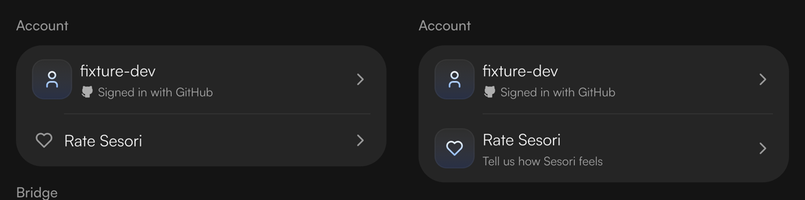
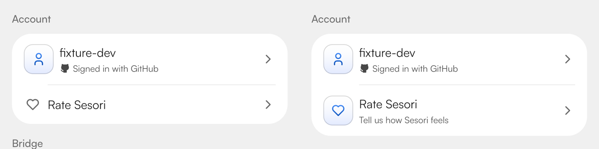
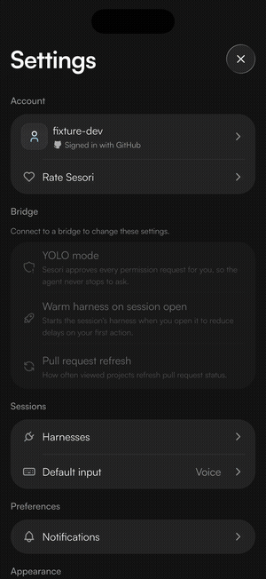
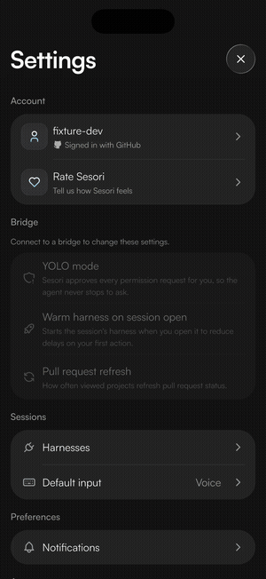
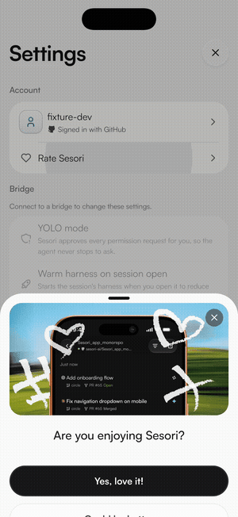
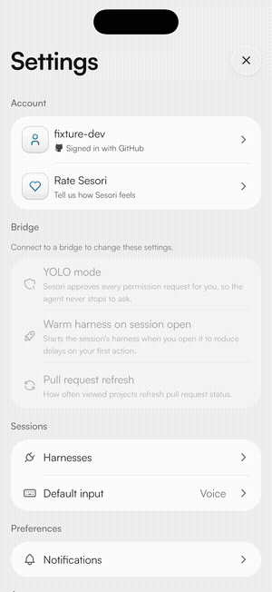

Feedback polish
This page shows the real app on the iOS simulator, using fixture data. On the left of each image or pair is the version on main; on the right is the fix on branch sesori/feedback-polish.
The row now uses the same 40 px tile as the account avatar, with a heart in place of the person icon. Its title lines up with the account title, both rows are the same height, and the divider starts under the text. The new second line reads "Tell us how Sesori feels".


The review question now takes over 300 ms after the tap, right after the button's pink pop, instead of 1.5 s. The old buttons fade out and move up 12 px; the question fades in and rises 20 px. The celebration keeps playing at the top. On the automatic iPhone prompt, the sheet now closes for Apple's review prompt after 0.8 s instead of 1.5 s.



